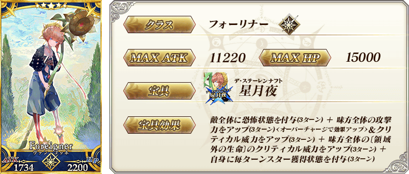
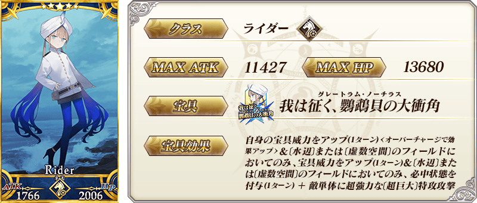
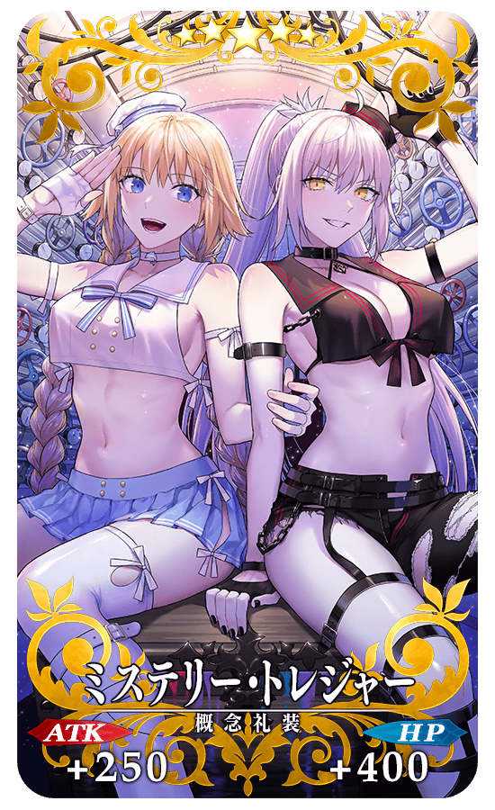
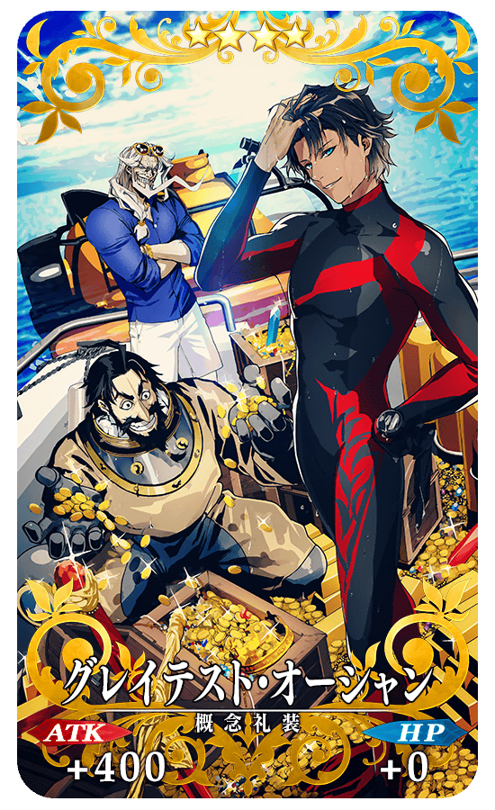
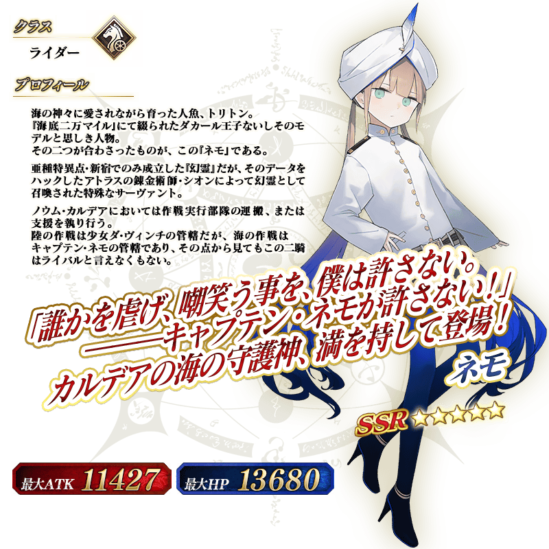

◆「虛數大海戰Pick Up召喚(每日交替)」期間◆
期間:2020年11月11日(三) 19:30～11月25日(三) 11:59
舉辦期間限定「虛數大海戰Pick Up召喚(每日交替)」！ ※就算未滿足活動參加條件的狀態也能進行本召喚。
本次從期間限定活動「虛數大海戰Imaginary Scramble ～鸚鵡螺浮出吧～」關聯從者之中，本召喚中做為初登場的2位從者以每日交替Pick Up！
▼期間限定從者
【每日交替Pick Up】
・★5(SSR)梵谷
▼新登場從者
【每日交替Pick Up】
・★5(SSR)尼莫
另外，下述的期間限定概念禮裝常駐Pick Up！
【常駐Pick Up】
・★5(SSR)ミステリー・トレジャー
・★4(SR)グレイテスト・オーシャン
・★3(R)カラー・ミー・トゥルー
裝備上述3種概念禮裝的話，在期間限定活動「虛數大海戰Imaginary Scramble ～鸚鵡螺浮出吧～」中會提升活動道具的掉落獲得數。
Pick Up期間中，Pick Up對象從者與概念禮裝的出現機率提升！
詳情請在聖晶石召喚畫面左下的召喚詳細確認。
11次召喚中確定1張★4(SR)以上和確定1位★3(R)以上的從者！ ※確定★4(SR)以上包含從者和概念禮裝。 ※本頁面皆為開發中圖片。會有與實際圖片相異的情況。
◆有關從者的注意◆
※請注意本召喚做為每日交替，下述的從者就算舉辦期間中也有不會被抽出來的日子。
・★5(SSR)梵谷
・★5(SSR)尼莫
※下述的從者在Pick Up期間結束後不會追加到故事召喚。
・★5(SSR)梵谷
※下述的從者在Pick Up期間結束後會追加到故事召喚。
・★5(SSR)尼莫
◆有關概念禮裝的注意◆
※下述的概念禮裝，Pick Up期間中也能靠友情點數召喚獲得。
・★3(R)カラー・ミー・トゥルー
※在自動變還設定登錄★3(R)概念禮裝的情況，下述的概念禮裝會變成自動變還的對象。
・★3(R)カラー・ミー・トゥルー
◆「虛數大海戰Pick Up召喚(每日交替)」Pick Up內容◆
| Pick Up期間 | 每日交替Pick Up |
|---|---|
| 11/11(三) 19:30～22:59 |
★5 梵谷 ★5 尼莫 |
| 11/11(三) 23:00～11/12(四) 22:59 | ★5 尼莫 |
| 11/12(四) 23:00～11/13(五) 22:59 | ★5 梵谷 |
| 11/13(五) 23:00～11/14(六) 22:59 | ★5 尼莫 |
|
11/14(六) 23:00～ 11/17(二) 22:59 |
★5 梵谷 ★5 尼莫 |
| 11/17(二) 23:00～11/18(三) 22:59 | ★5 梵谷 |
| 11/18(三) 23:00～11/19(四) 22:59 | ★5 尼莫 |
| 11/19(四) 23:00～11/20(五) 22:59 | ★5 梵谷 |
| 11/20(五) 23:00～11/21(六) 22:59 | ★5 尼莫 |
| 11/21(六) 23:00～11/22(日) 22:59 | ★5 梵谷 |
|
11/22(日) 23:00～ 11/25(三) 11:59 |
★5 梵谷 ★5 尼莫 |
※請注意會以每日交替變更Pick Up的從者。



|  |
★★★★★SSR
|
|  |
★★★★SR
|

|
★★★R
|


介紹在本召喚Pick Up的2位從者寶具演出！
在「Fate/Grand Order」官方網站內的公告中，以影片公開寶具演出，敬請確認。
【★5(SSR)梵谷】
【★5(SSR)尼莫】
其他還有，期間限定活動「虛數大海戰Imaginary Scramble ～鸚鵡螺浮出吧～」同時舉辦！
關於詳情，請自下述橫幅確認。
■「虛數大海戰Imaginary Scramble ～鸚鵡螺浮出吧～」詳細情報